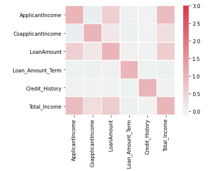

A Machine Learning Approach into Loan Prediction

Overview
Before giving out a loan, companies would need to access the loan eligibility of their clients and their capabilities to pay back the loan.Develop an API to determine the Loan eligibility of clients based on socio-economic factors.
Tools / Packages Used
- Python
- Numpy
- Pandas
- Matplotlib and seaborn for data visualizations
- Scikit-learn for Machine Learning
Data
The data was gotten in two parts;- train.csv - the dataset for the model to be trained on consisting of past loans and their loan status
- test.csv - the new customers for which we want to find their loan eligibility
- Gender
- Married
- Dependents
- Education
- Self_Employed
- ApplicantIncome
- CoapplicantIncome
- LoanAmount
- Loan_Amount_Term
- Credit_History
- Property_Area
- Loan_Status
Heatmap Showing Relationship between variables
Feature engineering
Taking the input of ApplicantIncome and CoApplicantIncome, the sum was used to calculate the Total Income of the household Adding this feature to the data increases the accuracy and precision of the models.Model Performance
API Development
A streamlit API is being built to collect user input and return the prediction of the model. This API is based on the random forest Classifier as this model allows us to modify the parameters involved.View Github repo for the codes and notebooks